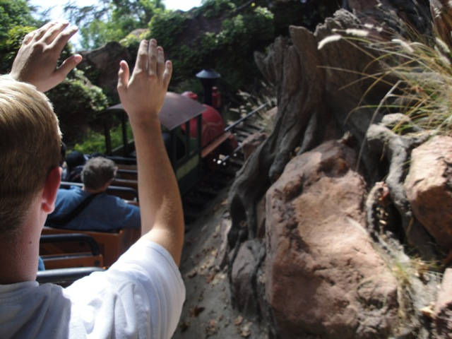
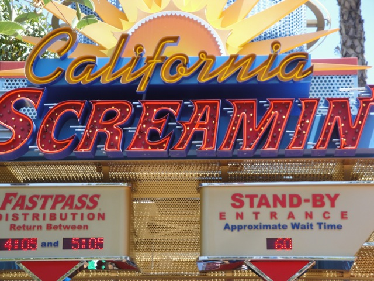
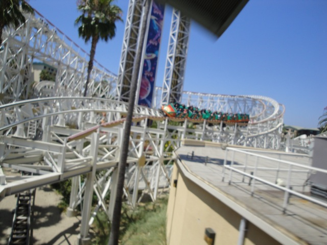
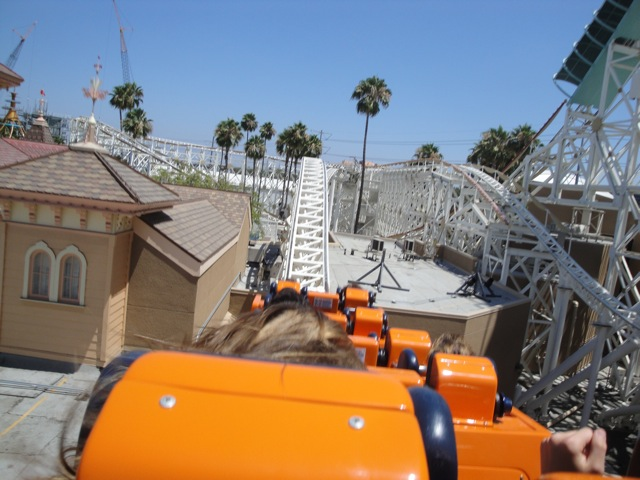
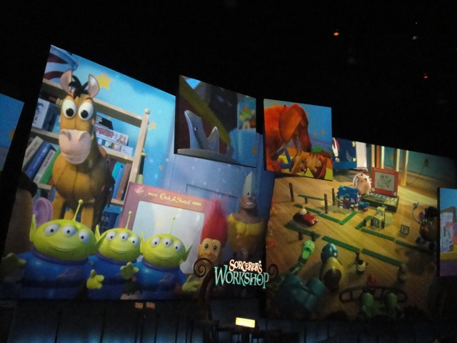
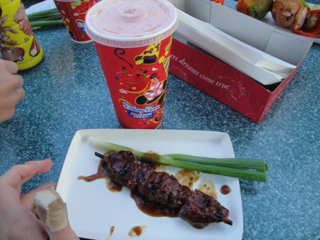
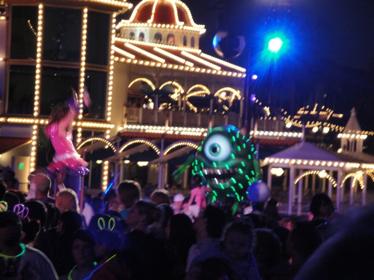

Disneyland Summer 2010
So, today, we decided to head off to the Disneyland Resort so we could go see World of Color as well as just see the resort since we haven't been in a couple months.
Yikes. There's a line to get into California Adventure. World of Color must be really popular.
Ok. So World of Color Fastpasses are really crowded. But it doesn't look too bad.
Wow. This is quite a long line to get a fastpass for a show.
Well, at least I got this waterfall to keep me company while I'm in the line.
Holy Crap! This line just keeps getting longer.
All right. After 20 minutes of waiting, I have my World of Color Fastpass.
Wow. Glad I got there when I did. (This has been happening to me quite often recently.)
All right. I haven't done Splash Mtn in a while.
 Splash Mtn Goodness.
Splash Mtn Goodness.

While Splash Mtn is fun and a great log flume, We are Incrediblecoasters. Not Incrediblelogflumes. Therefor, we must start showing more coasters.
 Hello other Big Thunder Mtn Riders. Come back. We at Incrediblecoasters don't bite!! (Ok, some of us do, but I don't!!!)
Hello other Big Thunder Mtn Riders. Come back. We at Incrediblecoasters don't bite!! (Ok, some of us do, but I don't!!!)
Ok. My guilty little secret is out. I love Vekoma Rides.
 Next up, some good old Matterhorn.
Next up, some good old Matterhorn.
Luckily, you don't really get wet on Matterhorn.
Who the hell thought it was a good idea to ride It's a small world?
Hey everyone!!! It's 11:45!!! We must celebrate this miracolous event!!!
Hey Disney, if you need someone to clean out Small World, I'm avaliable.
 "How's it going Mr. Shrubbary Moose?"
"How's it going Mr. Shrubbary Moose?"
I am not happy right now.
Hey Aladdin, can you loan me the Genie? I need to wish myself out of here.
On the brightside, at least they don't play Justin Beiber's crap here. (I refuse to call it music.)
Another Disneyland visit, another lunch at Storytellers.
That's why we're here.

Holy Crap!! California Adventure is CROWDED today.
Luckily, California Screamin has a working single riders line. Unlike a certain white looping coaster in Southern California.
 Why do you people waste your time in hour long lines? I got on California Screamin in 5 minutes.
Why do you people waste your time in hour long lines? I got on California Screamin in 5 minutes.

Ooh!! Rare angle of California Screamin.
 California Screamin Loopiness.
California Screamin Loopiness.

California Screamin was running quite well today.
Time for me to say my final goodbyes to Maliboomer.
Maliboomer, we were never that close. I hate the awful screamshields you have and you are not a very special space shot. Both Dr. Doom @ IOA and Hellevator @ PNE Playland are much better, I haven't ridden you since 2007, and if I really cared about Space Shots, 5 of the parks on the upcoming Middle America Trip have Space Shots that are all most likely better than you. But despite all this, I'm gonna miss you. You were still enjoyable and really helped make the Paradise Pier Skyline.
And I really appreciated the fact that you were smart enough to add a single riders line.
 Oh boy!!! Silly Swings finally opened!
Oh boy!!! Silly Swings finally opened!
God Damn!!! I don't care if it's brand new!!! I'm not waiting 30 minutes to ride chairswings!!!
 Next up, Mullholland Madness.
Next up, Mullholland Madness.
Oh look. Another ride that realizes that a single riders line is needed.
 California Screamin from Paradise Pier.
California Screamin from Paradise Pier.
Silly Swings looks so much nicer than the Orange ever did.
 Little Mermaid Construction Update.
Little Mermaid Construction Update.
I'll be back for you Little Mermaid.

I love this place. I really need to spend more time in here.
 I may have spent 30 minutes drawing that, but I actually got it to actually move!!! =)
I may have spent 30 minutes drawing that, but I actually got it to actually move!!! =)
Meh, that house may be haunted, but it's probably not nearly as creepy as my house. (Or at least my room.)
For all you Alice in Wonderland fans, put your sad faces on. The Alice in Wonderland ride is closed.
Another visit to Toontown was long overdue.
 Yeah, I think Incrediblecoasters is gonna fit in just perfectly with this place.
Yeah, I think Incrediblecoasters is gonna fit in just perfectly with this place.
Oh Boy!! Cartoon Spin!! I wonder if I'll find Mr. Roadrage Asshole speeding, showing off his middle finger, and throwing half empty Powerade bottles in here!!
We then took a ride on Gadgets Go Coaster.
I don't see height requirement fiascos, land permit problems, or any issues with Vekoma on Gadgets Go Coaster. ;)
Wee! Roller Skaters Rule!
 Up next, Incrediblecoasters hits up the Andromeda Galaxy!!!
Up next, Incrediblecoasters hits up the Andromeda Galaxy!!!
Wow. Looks like the side effects of Cosmic Radiation are alot more severe than I originally thought.
Up next, Incrediblecoasters gets a new resteraunt credit!! =)

We have to eat here more often. The food here is astonishingly good.
At this point, I had to head back to California Adventure to get my spot for World of Color.
Oh good. It got dark.
Dude!! The Silly Swings look awesome in the dark!!!
To my suprise, World of Color had a cool interactive Preshow so you wouldn't be bored to death while waiting.
This preshow consisted of Tigger,...
 Sebastian the crab,...
Sebastian the crab,...

Mike, and many other Disney Characters. And as for World of Color, that show is awesome. Go see it now!!!
Home